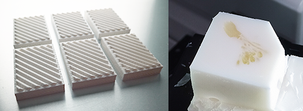
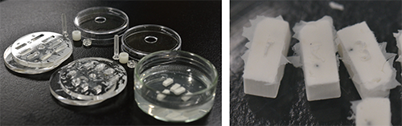
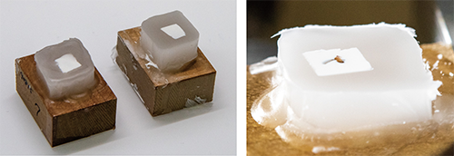
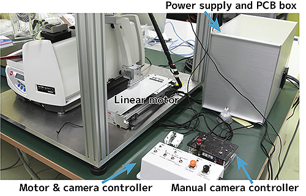
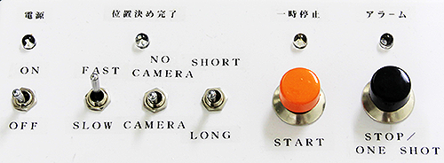
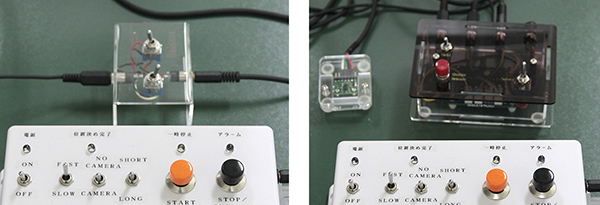

CoMBI-S（Sliding microtome, motorized/滑走式ミクロトーム、電動化）
Paraffin block
- Fix specimens as usual.
- Stain with 1% tannic acid in PBS for 1 hr, or overnight. This step improve the contrast of blockface image in some specimens.
- Wash well in PBS and stored in PBS 4C. To store for a longer period, add sucrose in PBS to inhibit change in color of tannic acid. Without sucrose, tannic acid become darker.
-
There is two methods to opacifiy paraffin:
-
White paraffin method including use of white base 
-
White agarose pre-embedding method  
See Sci Rep (2021)11:13108, Fig.4 and Suppl. Fig. S4 for detail. Opacification greatly improves the quality of surface rendered images. White paraffin is suitable for larger specimens (>5 mm), and white agarose for smaller specimens (<3 mm).
-
-
Dehydrate using graded series of EtOH and xylene/xylene substitute.
- Embed in paraffin as usual.
- いつもどおり、標本を固定する。
- 1%タンニン酸/PBSで1時間または一晩染色する。このステップは、標本のブロックフェイス画像のコントラストを向上させます。効果の程度は標本よって異なります。
- PBSでよく洗い、PBS 4度で保存する。長期間保存する場合は、タンニン酸の変色を抑えるためにPBSにスクロースを加える。スクロースがないとタンニン酸の色はどんどん濃くなります。
-
パラフィンを不透明にするには2つの方法がある。
- 白パラフィン法
- 白アガロース前包埋法
詳しくはSci Rep 2021 図4 補足図4をご覧ください。不透明化を行うことで、サーフェスレンダリング画像の品質が大幅に向上します。白パラフィン法は大きめの標本（5 mm以上）に、白アガロースは小さめの標本（3 mm以下）におすすめです。
-
EtOHとキシレン/キシレン代替品を使用して脱水する。
- 通常通り、パラフィンに包埋します。
Frozen block
- See "Frozen block"
Operation
A movie showing CoMBI-S in operation is available at Sci Rep (2021)11:13108, Suppl Movie.装置が動く様子は、論文のサイトに補足動画として掲載しています。


- Expose the blockface where you start imaging/collecting sections.
- Turn ON the switch of the Power supply and PCB box.
- Turn ON the switch of the Motor & camera controller.
- Select sectioning speed, FAST or SLOW. I usually use FAST.
- Select camera connection. NO CAMERA or CAMERA.
- Select waiting time for releasing shutter. LONG or SHORT. LONG (3 sec)for higher magnification 4-5x, SHORT (1 sec) for lower magnification; 1-2x. This time is critical to wait for the system stabilize, and to image without blur.
- START for serial slicing and imaging. At the beginning, there are several seconds for moving the handle to the start point.
- There is three mode to stop;
- STOP at any timing; a slicing and an imaging then STOP at the rear-end.
- START during going forward; a slicing then STOP at the front-end. This mode can be used when collecting sections.
- START during going back; an imaging then STOP at the rear-end.
In case you want to collect many sections, manual opereation may be useful rather then motor-controll. Turn OFF the switch for motor to release the handle, then you can controll manually. Toggle switches are inserted between camera and controller to release camera shutter manually (below photo, left). I also made a contactless type using a TOF sensor to keep the system stable (right).

- イメージングを開始するブロック面を面出し
- 電源ボックスのスイッチをONにする。
- モーター＆カメラコントローラのスイッチをONにする。
- 切削速度をFASTまたはSLOWから選択します。通常はFASTを使用します。
- カメラの接続を選択する。「カメラなし」または「カメラあり」。
- シャッターを切るまでの時間を選ぶ。LONGまたはSHORT。高倍率の4-5倍の場合はLONG（3秒）、低倍率の1-2倍の場合はSHORT（1秒）となります。この時間は、システムが安定するのを待って、ブレずに撮影するための時間です。
- STARTで切削と連続イメージングを開始します。開始までに、ハンドルをスタート地点に移動させるために数秒かかります。
- 停止するには3つのモードがあります。
- 任意のタイミングでSTOPボタン：切削とイメージングを行った後、後端でSTOPします。
- 前進中にSTARTボタン：切削後に前端でSTOPする。このモードは、セクションを収集する際に使用できます。
- 後退時にSTARTボタン：撮像後、後端でSTOPします。
多くの切片を回収したい場合には、モーター制御ではなく手動操作のほうが便利かも知れません。モーターのスイッチをOFFにすると、ハンドルがフリーになって、手動で操作できるようになります。カメラとコントローラーの間にトグルスイッチを入れて、カメラのシャッターを手動で切ります（下の写真左）。また、システムの安定性を保つために、TOFセンサーを使った非接触型も作ってみました（右）。